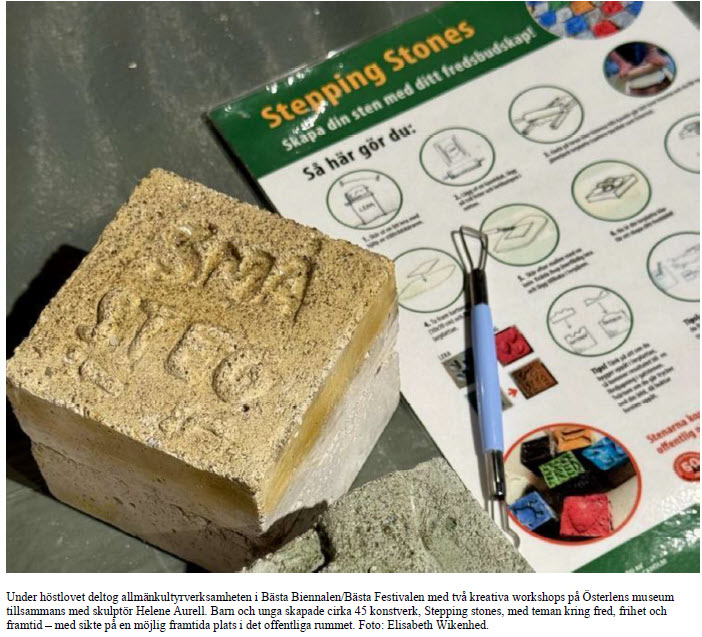
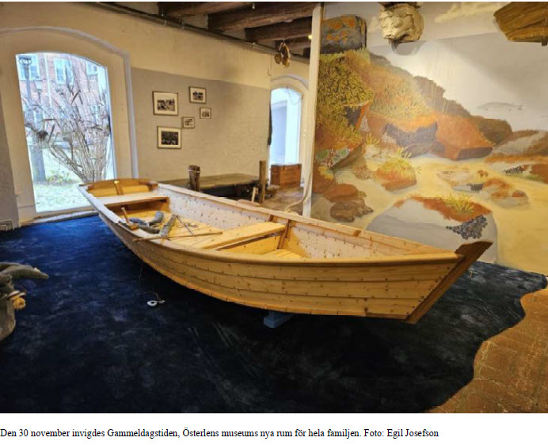
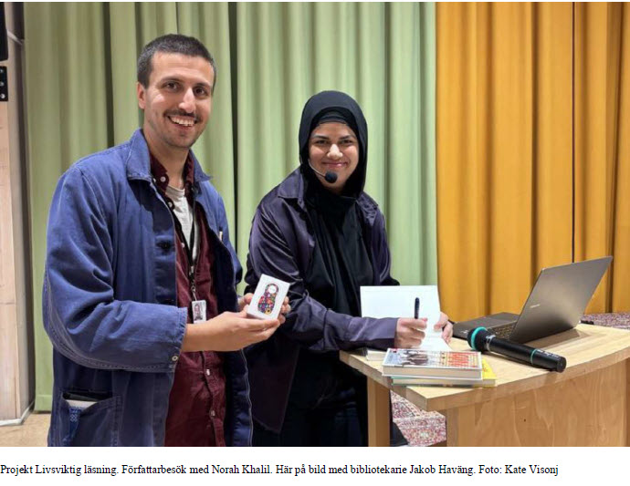
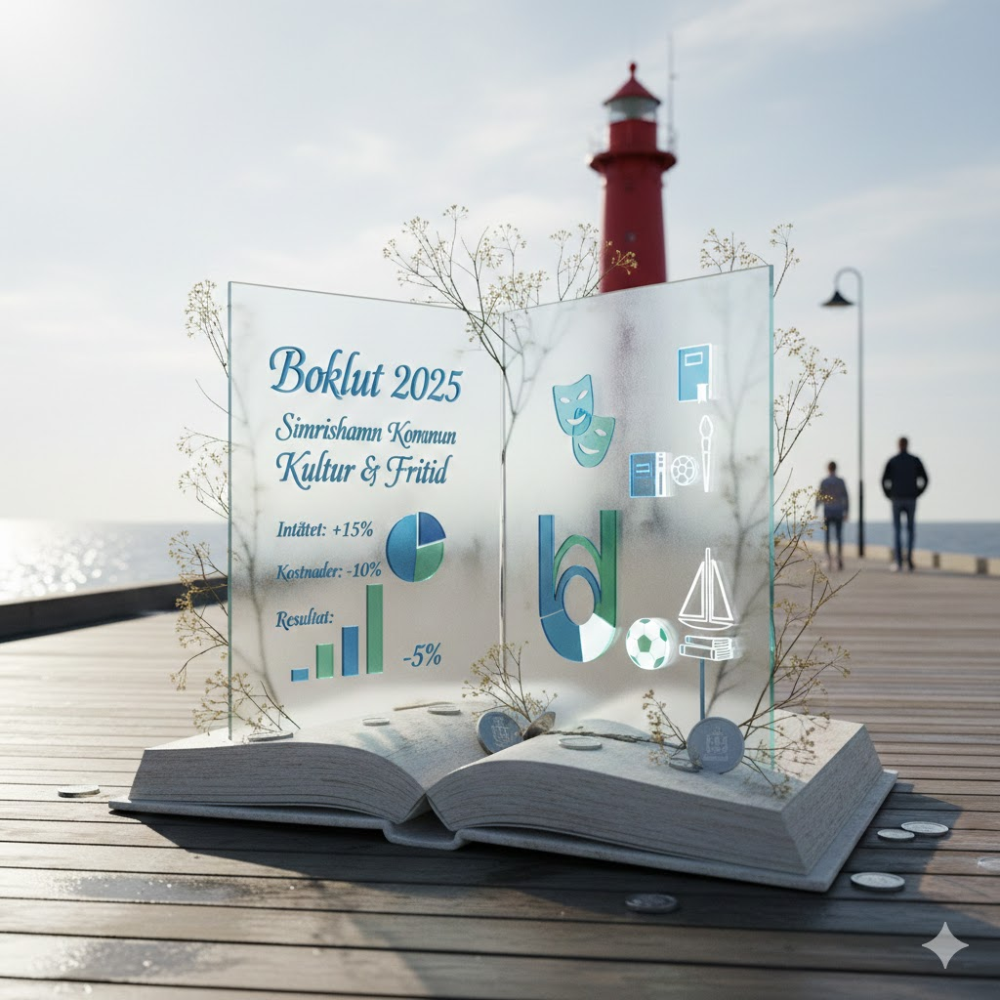
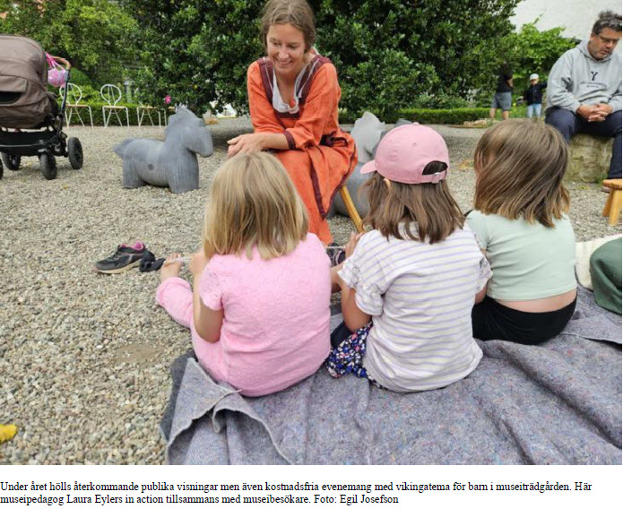

När verksamheten växer
Simrishamns kultur- och fritidsförvaltning 2024-2025
Sida 1 av 5
Simrishamns kultur- och fritidsförvaltning 2024-2025





Bilder från Simrishamns kultur- och fritidsverksamhet
Nu är du redo! Testa dina kunskaper om kommunal verksamhetsutveckling! 📚🏊♂️🎨
Filstruktur: Detta quiz är byggt med separation of concerns-principen, där HTML, CSS och JavaScript är uppdelade i separata filer:
Att dela upp kod i separata filer ger flera fördelar:
Skapad: 2026-01-30
Quiz nr: 22
Baserad på: Blogginlägg "När verksamheten växer" samt Simrishamns kommuns årsbokslut för Kultur- och fritidsnämnden 2024-2025.
Fokus: Kommunal verksamhetsutveckling, inkludering och tillgänglighet i kultur- och fritidsverksamhet.
Quiz nr 22: När verksamheten växer - Simrishamns kultur- och fritidsförvaltning 2024-2025
Frågor och fördjupade förklaringar baserade på (i Harvard-format):
Detta quiz utforskar utvecklingen av Simrishamns kultur- och fritidsförvaltning under åren 2024-2025, en period präglad av nya projekt, ökade besökssiffror och ett starkt fokus på inkludering och tillgänglighet.
🎯 Fokus: Kommunal verksamhetsutveckling, inkluderande fritidsaktiviteter, läsfrämjande, museiutveckling och badverksamhet.
Läs det fullständiga blogginlägget: "När verksamheten växer"
Läs mer på bloggen: Controller utan gränser